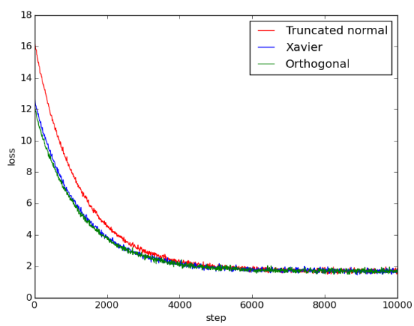
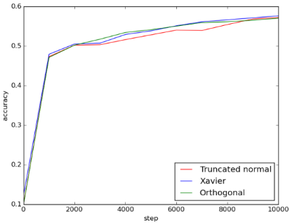
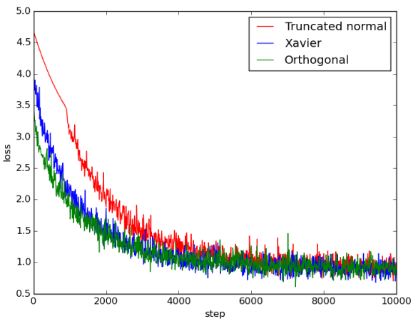
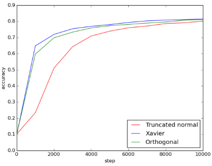
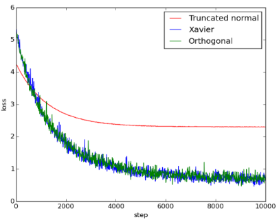
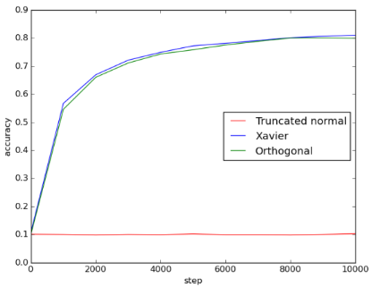

Yiddishkop's tech blog
Table of Contents
近期 post 列表:
- 2018-07-08 - 闲来打油诗之四: 追忆高考
- 2018-07-19 - Language Modeling
- 2018-07-23 - Pandas学习笔记之三
- 2018-08-09 - Xavier 初心不负?
1 Xavier初心不负?
训练神经网络会经常遇到 inf or nan (by tensorflow)问题, 如果能排除值计算的原因, 那么出现这一错误大多是由于 vanishing/exploding gradient, 本文重点探讨
orthogonal1, 2 和 xavier3 两种初始化方法在应对 vanishing 和
exploding 问题上的原理和优势, 并进行一部分实验佐证结论.
训练神经网络经常使用的初始化方法有这么几种, 本文仅针对最后两种:
[X]identity initialization[X]uniform initialization[X]gaussian initialization[ ]orthogonal initialization[ ]xavier initialization
2 Xavier简介
Xavier initialization是将neural network中的weight做normalization，这个做法是由 Xavier Glorot和Yoshua Bengio于2010年在”Understanding the difficulty of training deep feedforward neural networks”3 这篇论文中提出。
在neural network中，如果weight的初始值太小，信息在layer之间传递时，会变得太小而失去作用(vanishing gradient problem)；如果初始值太大，信息则会在传递时变得太大 (exploding gradient problem)。Xavier initialization能够使信息在传递时维持在一个合理的范围内，因此能够传递通过较多的layer，而使loss收敛得较快或得到较好的 training结果。
文中的分析假设network的初始化处于线性条件，weight的初始化是独立的，且输入特征的 variance相同，则可以得到：
\(Var[{z}^{i}]=Var[x]\prod_{{i}^{'}=0}^{i-1}{{n}_{{i}^{'}}[{W}^{{i}^{'}}]}\)
\(Var[\frac{\partial{Cost}}{\partial{s}^{i}}]=Var[\frac{\partial{Cost}}{\partial{s}^{d}}]\prod_{{i}^{'}=i}^{d}{{n}_{{i}^{'}+1}Var[{W}^{{i}^{'}}]}\)
其中 \({z}^{i}\) 为第i层的输入向量，\({n}^{i}\) 为第i层的大小，\(x\) 为 network 的输入值，是 \(Var[{W}^{{i}^{'}}]\) 为第 \({i}^{'}\) 层中所有weight共同的variance， \({s}^{i}={z}^{i}{W}^{i}+{b}^{i}\) ，也是第i层 activation function 的输入向量，\(d\) 为network的层数。
在forward-propagation时，为了使资讯能够传递得更远，我希望在通过每一层后，向量的variance不变：
\(\forall(i,{i}^{'}), Var[{z}^{i}]=Var[{z}^{{i}^{'}}]\)
同样地, 在backward-propagation时, 希望cost function gradient的variance不变：
\(\forall(i, {i}^{'}), Var[\frac{\partial{Cost}}{\partial{s}^{i}}]=Var[\frac{\partial{Cost}}{\partial{s}^{{i}^{'}}}]\)
上述两个情况可写为：
\(\forall{i},\quad{n}_{i}Var[{W}^{i}]=1\)
\(\forall{i}, \quad{n}_{i+1}Var[{W}^{i}]=1\)
将两个条件综合, 我希望得到：
\(\forall{i}, \quad{Var[{W}^{i}]=\frac{2}{{n}_{i}+{n}_{i+1}}}\)
这篇论文提3出了一个能够大致满足目标的方法, 称为normalized initialization：
\(W\sim{U[-\frac{\sqrt{6}}{\sqrt{n}_{j}+{n}_{j+1}}, \frac{\sqrt{6}}{\sqrt{n}_{j}+{n}_{j+1}}]}\)
其中 \(U[-a, a]\) 是区间为(-a, a) 的 uniform distribution。当neural network的层数愈多时, 在层层传递的过程中, weight造成的效应愈大, 因此normalized initialization 的重要性愈高。
3 其他initialization方法
我的实验将Xavier initialization与以下两种initialization方法做比较：
1)随机截断正常初始化: 基本的random initialization, 从normal distribution中产生随机变数, 排除掉距离平均值两个标准差外的数值, 做为weight的初始值。
2)随机正交初始化: 以random orthogonal matrix做为neural network的weight初始值, 此方法由Saxe et al.4 于2014年提出。 对于一个orthogonal matrix W, 会满足 \(W^{T}W=WW^{T}=I\) , 因此有以下特性：
- \(\left\|Wx\right\|_{2}=\sqrt{(Wx)^{T}Wx}=\sqrt{x^{T}W^{T}Wx}=\left\|x\right\|_{2}\) , 任一向量乘上orthogonal matrix后, norm不改变。
- \(w_{i}^{T}w_{j}=\delta_{ij}\) , 其中 \(w_{i}\) 是w的第i个column。Orthogonal matrix的column之间、row之间都互相orthonormal。
上述特性(1)能让输入向量在network中传递时, 保持norm不变, 因此用在层数较多的neural network或RNN时, 能够有效减少vanishing gradient problem和exploding gradient problem。特性(2)直观上来看能让weight之间有独立性, 因此让每个neuron学到不同的输入特征。
在实作random orthogonal initialization时, 先产生一个random normal distribution的矩阵M, 再用singular value decomposition得到 \(M=U\Sigma{V}\) , 其中U和V皆为 orthogonal matrix, 取其一做为weight的初始值。
4 实验设计与结果
我的实验是做在CIFAR-10这个dataset上。我试了三种model, 分别是:
- 5层 fully-connected layer;
- 2层 convolutional layer + 2层 fully-connected layer
- 5层 convolutional layer + 3层fully-connected layer
每层convolutional layer之后都有加ReLU、normalization以及max pooling, 每层 fully-connected layer之后都有加ReLU。 每一种model都分别以 truncated normal、 Xavier、orthogonal 三种initialization方式, 测试其loss和accuracy随training step 的变化。
4.1 5层全连接层
每层有1000个hidden units。结果如下图：

Figure 1: 5fc_loss

Figure 2: 5fc_acc
可以看出来Xavier和orthogonal initialization比起truncated normal initialization, loss一开始比较小, 但到最后收敛到差不多的结果。三者的accuracy在training过程中差异不大, 最后达到的值也相差不大。
在这个model中, Xavier和orthogonal initialization相较于random initialization的优势只有在training一开始的loss看得出来, 在training后期并不显著。
4.2 2层卷积层+2层全连接层
两层convolutional layer的kernel size都是(5, 5, 64), 两层fully-connected layer的 hidden units数目分别是384和192。结果如下图：

Figure 3: 2conv_2fc_loss

Figure 4: 2conv_2fc_acc
在这个结果中, 比起truncated normal initialization, Xaiver和orthogonal initialization的loss一开始比较小, 但到最后三者都收敛到差不多的大小。Xaiver和 orthogonal initialization的accuracy一开始较高, 但最后三种方法也都达到差不多的 accuracy。
在这个model, Xaiver和orthogonal initialization在training初期loss较低, accuracy也上升得比较快, 显示两者优于random initialization, 但在training次数较多后同样看不出显著差异。
4.3 5层卷积层+3层全连接层
五层convolutional layer的kernel size都是(5, 5, 64), 三层fully-connected layer的 hidden units数目都是500。结果如下图：

Figure 5: 5conv_3fc_loss

Figure 6: 5conv_3fc_acc
由图可知, Xavier initialization和orthogonal initialization的表现几乎一样好, 两者比起truncated normal initialization, 不仅收敛得比较快也收敛得比较好。使用 truncated normal initialization可能遇到了vanishing gradient problem或exploding gradient problem, 导致loss无法下降。由accuracy可得知, Xavier和orthogonal initialization的accuracy都能提升到0.8左右, 但使用truncated normal initialization 时, training完全没有效果, 导致accuracy只有0.1, 相当于乱猜。
这个model的层数比第二个model多, 可以明显看到Xaiver和orthogonal initialization的优势。使用Truncated normal initialization时, 即使增加training次数, 也无法提升 accuracy。
5 源码及使用说明
source code: https://github.com/YiddishKop/ml_src_initializer_compare.git
| 源码文件 | 说明 | |
|---|---|---|
| 5fc.py | 5 fully-connected layers | |
| 2conv_2fc.py | 2 convolutional layers + 2 fully-connected layers | |
| 5conv_3fc.py | 5 convolutional layers + 3 fully-connected layers |
Training
python [5fc|2conv_2fc|5conv_3fc]_train.py
Testing
python [5fc|2conv_2fc|5conv_3fc]_eval.py
6 结论
6.1 xavier initialization vs random initialization
由实验结果可以知道,
- 若 model比较简单, random initialization得到的 值没有太差, 虽然loss下降得较慢, 但在 training次数够多时, 也能得到和Xavier initialization 差不多的accuracy
- 若 model比较复杂 (如第三种model), 则 weight的初始值重要性提高, 使用random initialization做training时, 就 可能无法提升model的accuracy, 而在我的实验中, 使用 Xavier initialization则能够收敛到较好的结果 。
6.2 xavier initialization vs orthogonal initialization
在实验中, orthogonal initialization能达到和Xavier initialization 差不多的结果, 两者之间看不出明显的优劣, 由此可知, Xavier initialization相较于其他 initialization方法, 并不一定具有绝对的优势。